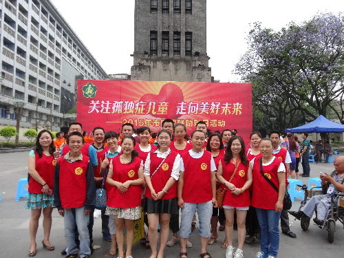

共青团宜宾市委开展“全国助残日”志愿服务活动
桂电志愿者网 日期：2015-05-25 来源：

帮助残疾人群的健康成长，让更多的青年朋友参与到“阳光助残”志愿服务行列，共青团宜宾市委积极组织和动员全市青年志愿者参与助残志愿者服务组织了心手相牵共享阳光”系列阳光助残志愿服务。
5月15日上午，宜宾团市委、市青志协组织40名青年志愿者、义工协同市残联在城区中山广场举行了“助残日”活动暨爱心捐赠仪式。活动围绕“全国助残日”的主题“关注孤独症儿童，走向美好未来”，青年志愿者和义工们协助现场开展了爱心捐赠、轮椅发放、文艺表演、残疾人事业图片展示、向孤独症儿童义务体检、孤独症儿童防治咨询、残疾鉴定咨询、假肢装配服务指南、残疾人法律政策宣传咨询等项活动。志愿者们发放宣传资料2100余份、协助发放了轮椅40台，同时还协助专业医护人员开展向残疾儿童义诊64人次，文艺表演节目9个，接受孤独症儿童防治、假肢装配及法律政策等咨询1123人次。
团市委根据团省委工作要求，积极组织各区县动员指导广大青年志愿者，以“心手相牵 共享阳光”为主题开展丰富的志愿助残服务活动。基层团组织也积极响应号召，联合当地志愿者组织开展了一系列志愿服务活动，共青团筠连县委组织志愿者开展了“全国助残日”宣传活动，在宣传活动中，志愿者宣传了残疾儿童入学指南、残疾人读本、与孤独症相关的宣传资料、残疾人维权手册等相关资料近1000份，并在现场设立了阳光助残志愿者招募点，招募了志愿者15名。高县团委组织团员青年走进中宏特殊教育学校举行关爱残疾学生活动，团员青年们和孩子们一起包抄手、擦皮鞋、理发、制作丝网花等，屏山县团委走进屏山县特殊教育学校开展了主题为“扶残助残，有你有我”的阳光助残活动。
【责任编辑：李想】